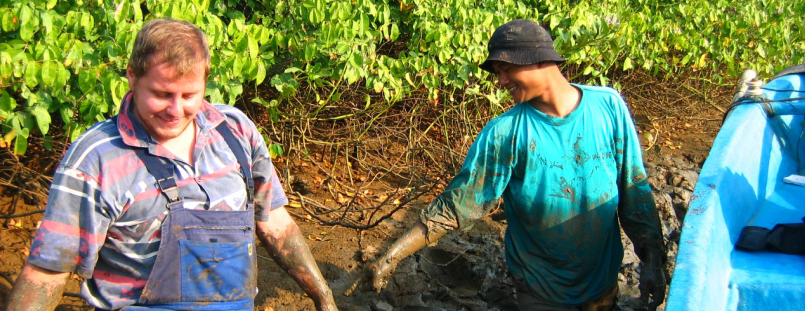
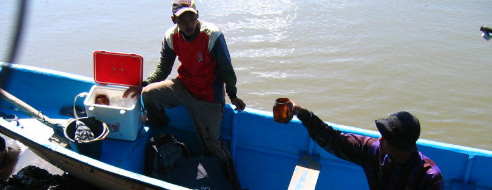
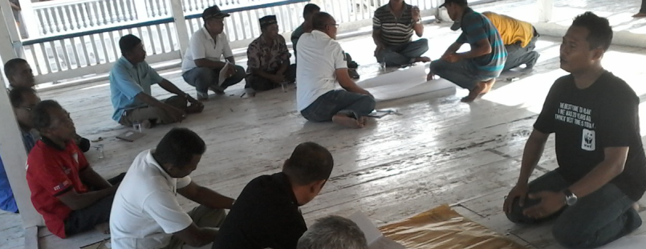

<div class="container">
  <ngb-carousel *ngIf="images">
    <ng-template ngbSlide>
      <div class="picsum-img-wrapper">
        <div class="inner1">
          <div class="inner2">
            
          </div>
        </div>
        <div class="carousel-caption">
          <h3>First slide label</h3>
          <p>Nulla vitae elit libero, a pharetra augue mollis interdum.</p>
        </div>
      </div>
    </ng-template>
    <ng-template ngbSlide>
      <div class="picsum-img-wrapper">
        <div class="inner1">
          <div class="inner2">
            
          </div>
        </div>
        <div class="carousel-caption">
          <h3>First slide label</h3>
          <p>
            Afforestation, reforestation, and revegetation activities are
            crucial to tackling climate change because they remove carbon while
            also restoring degraded ecosystems and improving soil conditions.
            ARR has natural challenges which include wildfires, drought and
            disease, which can lead to ultimately the reversal of carbon
            sequestration. Ultimately these are factors which must be considered
            when purchasing credits from the projects. We work with a variety of
            project developers in securing access to quality ARR projects. They
            are typically hard to source due to the high demand from larger
            buyers who secure access to these projects by purchasing large
            volumes over set time period.
          </p>
        </div>
      </div>
    </ng-template>
    <ng-template ngbSlide>
      <div class="picsum-img-wrapper">
        <div class="inner1">
          <div class="inner2">
            
          </div>
        </div>
        <div class="carousel-caption">
          <h3>First slide label</h3>
          <p>
            Walii Foundation have been related to coastal issues since
            beginning. Some of the research that Walii Foundation have been
            involved in is related to ecolabelling of live coral fisheries,
            community-based management of coastal and marine resources to
            research on the dynamics and construction of coastal MHA. Apart from
            that, for empowerment work, Walii Foundation have strengthened and
            assisted coastal indigenous peoples. <br />
            <br />
            Walii Foundation identified and assisted indigenous peoples in the
            Buton, Wakatobi and Southeast Sulawesi regions. Walii Foundation
            provided assistance to marginalized communities, one of which is
            Indigenous Peoples, to obtain rights to social identity, basic
            social services and to encourage inclusion policies with Partnership
            (Partnership for Governance Reform) through the Social Care and
            Inclusion Program. <br />
            <br />
            Walii Foundation carried out empowerment related to coastal
            communities and mangrove issues. Besides being active in marine and
            fisheries issues, Walii Foundation also active in socio-cultural
            issues. Apart from providing assistance, Walii Foundation also
            conducted meet-and-greet and curated knowledge of local regulations
            and assisted the empowerment of Indigenous Peoples in Wakatobi,
            especially Binongko. Walii Foundation was involved in empowering and
            assisting Indigenous Peoples in the Indigenous Care
            Program-Partnership related to the issue of inclusion social.
          </p>
        </div>
      </div>
    </ng-template>
  </ngb-carousel>
</div>
